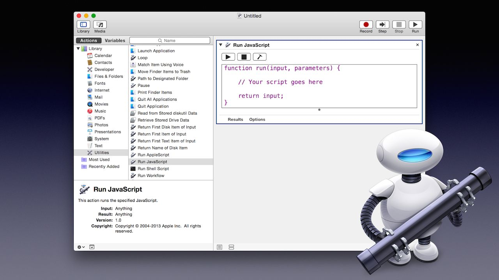

OS X Yosemite & Automation
It’s definitely not a stretch to say that Yosemite changes everything. Dramatic interface design tightly integrated with ground-breaking cooperation between computers and mobile devices. Lines are being blurred here people.
It’s about power. It’s about integration. It’s about getting things done. And, as always, what technologies are the grain in the granite? That’s right — Automation. It’s simple: you take Yosemite combined with Automation and you get: “Yose-mation” Unleashed!
And so the story of Automation in this release follows the themes outlined by Yosemite: leaner, cleaner, more powerful, and with a dramatic flair or two. It’s all in Automation in OS X v10.10. To get the details, check out the short summaries detailed below:
Automator remains unique amongst automation tools. Because of its simple drag-and-drop approach for creating “Automation Recipes,” it has given both customers and professionals the means for creating complex workflow solutions, often without writing a single line code. Yosemite refines and extends this popular application.
Keynote Automator Actions Set
Over two dozen actions in the Automator Actions for Keynote collection deliver a reliable set of power tools for rapid development and deployment of high-quality professional presentations.
For enterprise developers and in-house solution experts, these flexible and customizable Automator actions are the essential component for delivering time-critical marketing, research, and sales materials. And they’re thoroughly documented with great examples and videos at our sister site: iworkautomaton.com
Dictation Commands
OS X works best when its technologies work together. Mavericks introduced Speakable Workflows as an extension of the Speakable Items architecture. But in Yosemite, Speakable Items are gone. Their functionality has been merged with the Dictation architecture of the OS and morphed into a new feature called Dictation Commands. But unlike Speakable Items, Dictation Commands are not separate from the rest of the speech architecture. Turn on Dictation and you automatically gain access to Dictation Commands. At any time—even during a dictation session—you can speak the title of a command to have it recognized and executed.
The best part of the new speech-related abilities of Yosemite is how easy Apple has made it to extend and customize Dictation Commands, courtesy of a new Automator template.
When you launch the Automator application in Yosemite, the workflow template chooser offers a new option: Dictation Command. Using this new workflow template you can create a system Dictation Command that automates any process or task that Automator is capable of performing.
TIP: Check out the Macworld article on creating Dictation Commands.
AppleScript remains a go-to tool for creating effective solutions for challenging problems. Time and again, it is used to solve issues that range from mere repetition to complex interactive workflows involving logic applied to multiple applications and frameworks, and even the UNIX shell. And with Yosemite, AppleScript continues to gain new abilities and client applications in OS X.
ASOC Everywhere!
AppleScriptObjective-C, or ASOC, is the dynamic fusion of the AppleScript and Objective-C languages, providing access within scripts to the classes and methods of the core Cocoa frameworks of OS X, while also possessing the ability to query and command applications throughout the OS via Apple Events.
In previous versions of OS X, AppleScriptObjective-C required hosting by applets, droplets, or applications, in order to execute. In Yosemite, ASOC is available everywhere AppleScript can run, including in standard script files and bundles executed by the Script Menu.
(⬆ see above ) Using ASOC in a Script • 00:31 • 14MB
This new freedom extends to ASOC’s use in Script Libraries, a powerful feature for creating scripting extensions introduced in Mavericks. Scripts used as libraries no longer require special flagging as AppleScriptObjective-C components.
And in addition, AppleScript handlers and libraries that incorporate the use of named parameters can now identify them as optional, making them much more flexible for use by scripts and applications.
(⬆ see above ) Using a Simple ASOC Library • 00:27 • 22MB
Automatic Progress Indicators
A long-requested feature arrives with Yosemite — automatic progress indicators. Add these new AppleScript language properties to your scripts and progress indicators appear automatically.
If your script is running in the Script Editor, progress indicators appear in the script window. If your script is running from the Script Menu, progress indicators appear in the Automation Menu in the main menu bar. And if your script is saved as an applet, a floating progress window appears automatically (like the one in the movie below).
(⬆ see above ) Automatic Progress Indicators • 00:20 • 14MB
The Script Editor is Back!
When it comes to look-and-feel, everything changed in Yosemite, including the venerable AppleScript Editor application. To begin with, it reverted to its original name: “Script Editor,” a much more appropriate moniker since Yosemite automation adds a well-known web-language stalwart to the family of OSA languages edited within this noble application.
You’ll also notice that the Script Editor slimmed down and “gussied up” all while adding new abilities and incorporating icons and controls used by the other editing applications in OS X.
Scriptable Data Merge Support in Pages
The new scriptable text placeholders in the Yosemite release of the Pages application provide the mechanism for automated data merging with external data sources such as Numbers spreadsheets.
JavaScript for Automation release notes
Automation in OS X has always been about power and choice. Scriptable applications, such as Pages, Keynote, Numbers, and the Finder, are automated using a variety of languages, including AppleScript, Objective-C, Perl, Python, and Ruby. With OS X Yosemite, application scripting support has been bolstered with the inclusion of another popular language: JavaScript.
JavaScript for Automation (JXA) extends the JavaScriptCore framework with support for querying and controlling all of the scriptable applications running in OS X. In addition, JavaScript for Automation incorporates an Objective-C bridge providing inline access to all of the Cocoa frameworks. This is not ‘yer ol’ JavaScript, it’s JavaScript-Yosemation!
And to make it even better, JXA scripts are integrated into all aspects of the system and can be invoked from the command-line, from the system-wide Script Menu, and can even be distributed as code-signed applets and droplets.
(⬆ see above ) JavaScript for Automation Overview • 25:96 • 393MB
DOWNLOAD the example applet and droplet featured in the movie.
Run JavaScript Action
And to further integrate JavaScript for Automation with the rest of the Automation tools of OS X, the new Run JavaScript action in Automator provides the means for inserting JXA power into workflows and even Dictation Commands!
